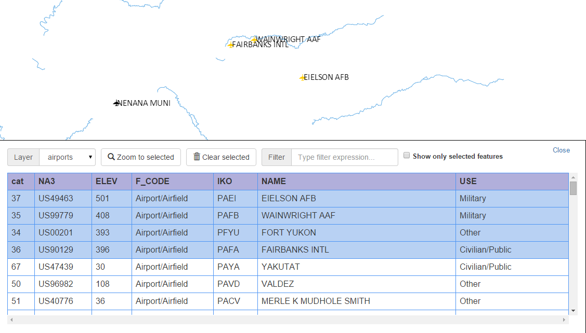
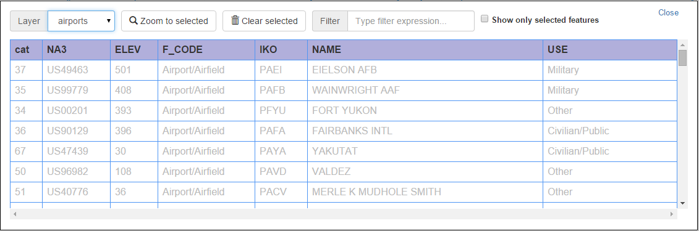
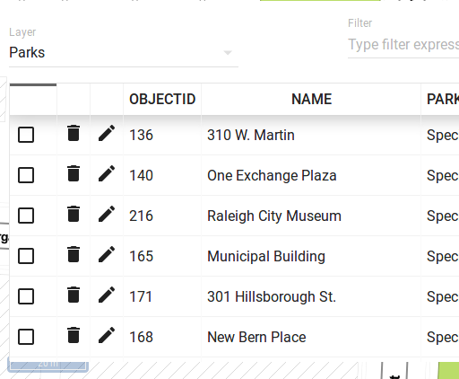

more options button in the top-right corner and enable Only show select option
more options button in the top-right corner and enable Only show select optionThe attributes table shows the attributes of features in the web map app's vector layers.

The layer drop-down list in the attributes table is used to select one of the available vector layers.
If the selected vector layer has too many features, the attribute table is split into several pages. Click Previous and Next at the bottom of the table to navigate trough all features.
If selection is allowed for the current layer in the attributes table, features can be selected in the table, by enabling the checkbox in their corresponding row. The feature will be highlighted in the canvas.
If you want to see only the features that are selected, click the
more options button in the top-right corner and enable Only show select option
The selection for the current layer can be cleared by clicking the
 Clear
selection button.
Clear
selection button.
Clicking the  Zoom to selected button will cause
the map to zoom to the minimum extent that covers all the selected features.
Zoom to selected button will cause
the map to zoom to the minimum extent that covers all the selected features.
Using the Filter field, it is possible to write an expression to show only the features that match the filter. Click the question mark icon next to it to learn about the expressions syntax. The filter is activated automatically, therefore, to clear it you simply need to erase the expression.
If the chosen layer supports editing, each row in the table will also show Edit and Delete buttons, which allowing you to edit features' attributes and delete features.
